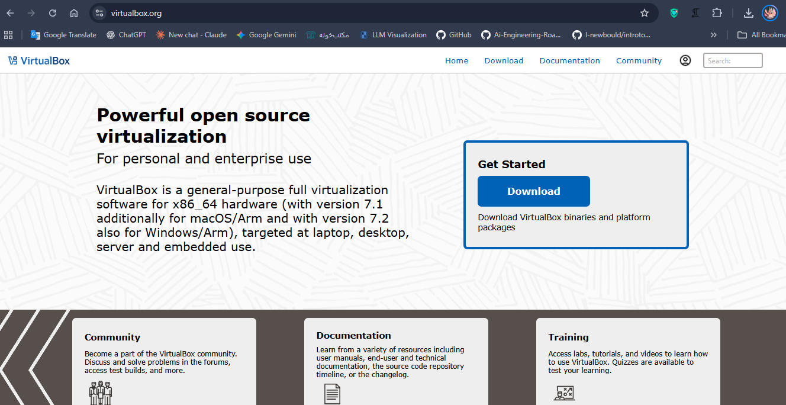
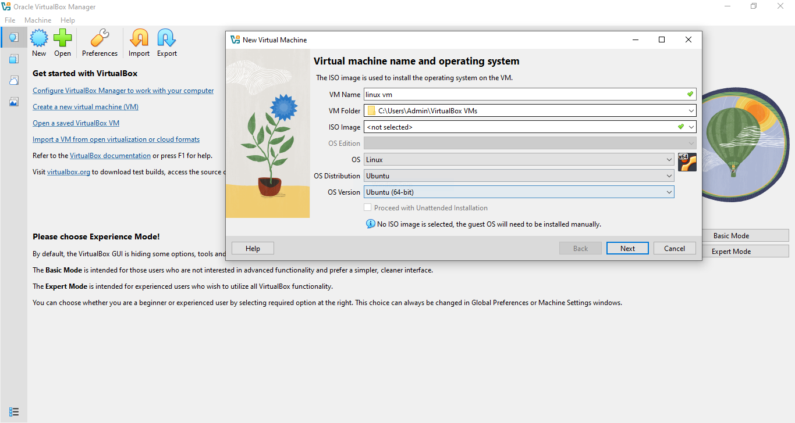
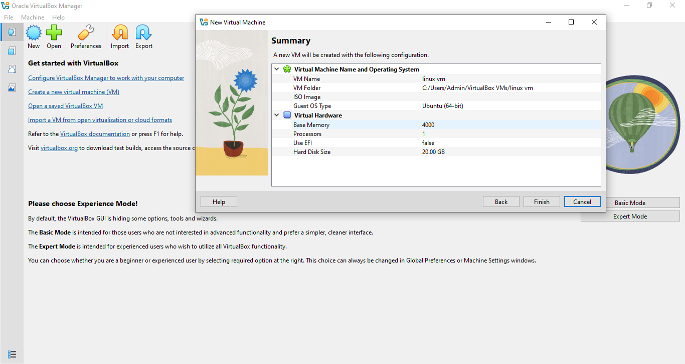
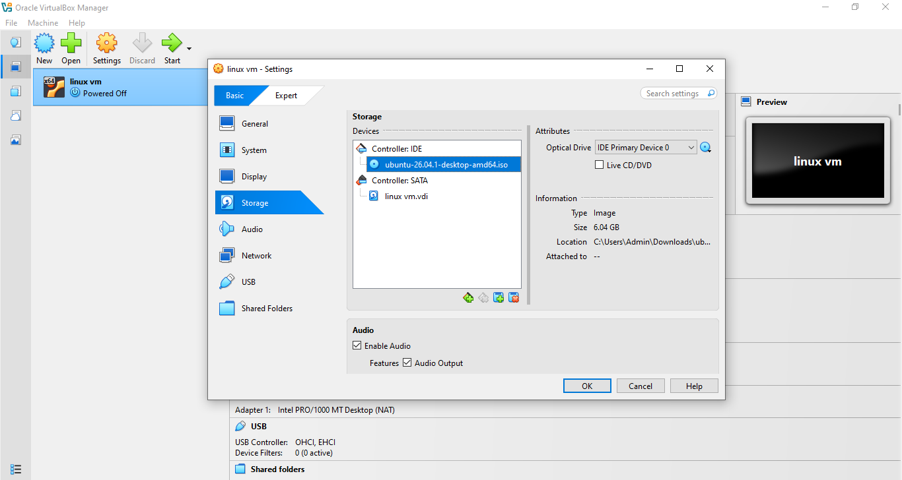
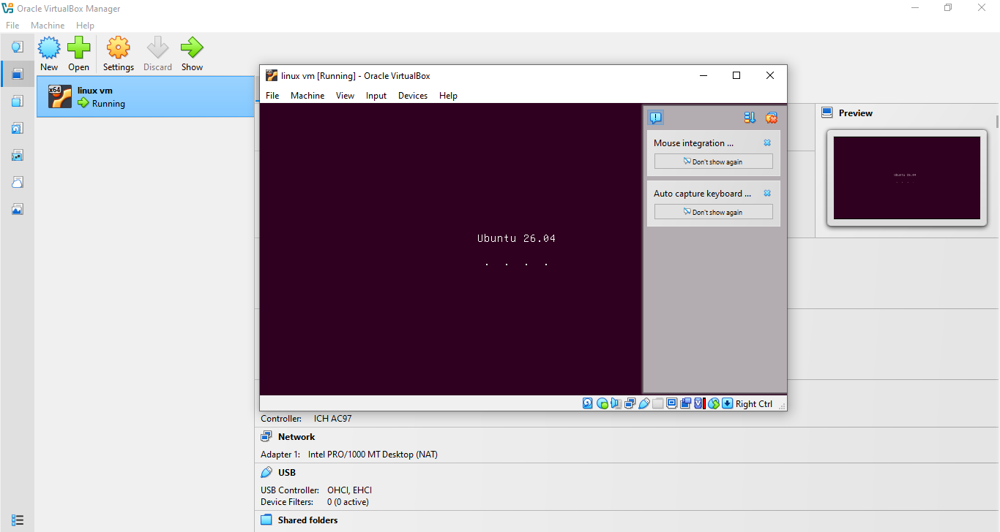
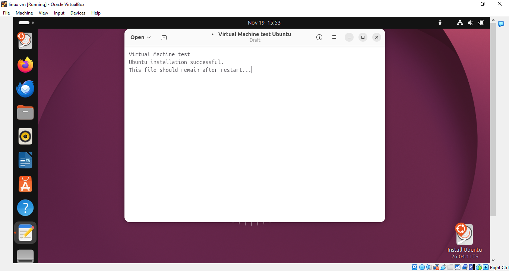
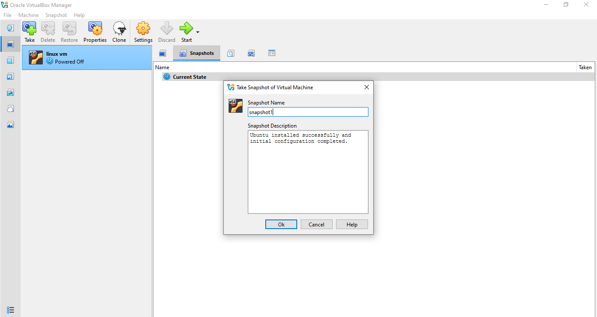

ساخت Virtual Machine با توزیع لینوکس
مجازیسازی — نصب یک توزیع لینوکس داخل VirtualBox بدون دستزدن به سیستمعامل اصلی
01 / هدف مأموریت
هدف این پروژه، ساخت یک ماشین مجازی (Virtual Machine) و نصب کامل یک توزیع لینوکس روی آن است. ماشین مجازی مانند یک کامپیوتر واقعی عمل میکند، اما داخل یک برنامه روی سیستمعامل اصلی اجرا میشود؛ بنابراین میتوان بدون ریسک برای ویندوز یا اطلاعات اصلی، لینوکس را تجربه کرد و تغییرات خطرناک را آزمایش نمود. در این پروژه با مفاهیم تخصیص منابع (RAM و هارد مجازی)، اتصال فایل ISO بهعنوان درایو DVD مجازی، فرآیند نصب سیستمعامل و قابلیت Snapshot آشنا میشوم. این مهارت پایهای برای محیطهای تست، آموزش و کار حرفهای IT است.
02 / ابزارها و محیط اجرا
Oracle VirtualBox: نرمافزار رایگان مجازیسازی که ماشین مجازی را میسازد و اجرا میکند.
فایل ISO توزیع لینوکس: تصویر نصب سیستمعامل که از سایت رسمی توزیع دانلود شد (Ubuntu؛ توزیعهای رایگان و امن مانند Linux Mint هم گزینهی مناسباند).
سیستم میزبان (Host): ویندوز، با قابلیت Virtualization فعال در BIOS/UEFI.
مشخصات ماشین مجازی: RAM برابر 4 GB و هارد مجازی 20 GB (مقادیر پیشنهادی پروژه؛ در صورت تفاوت، مقادیر واقعی خودتان را جایگزین کنید).
03 / مراحل انجام کار و تصاویر اجرا
- دانلود نرمافزار مجازیسازی:VirtualBox را از سایت رسمی Oracle دانلود می کنیم

دانلود VirtualBox از سایت رسمی Oracle - دانلود ISO آزمایشی: یک توزیع سبک لینوکس (Ubuntu یا Linux Mint) را از سایت رسمی آن دانلود میکنیم.

دانلود فایل ISO لینوکس از سایت رسمی - ساخت VM جدید:در VirtualBox روی New کلیک می کنیم، یک نام انتخاب می کنیم و نوع نسخهی سیستمعامل را مشخص می کنیم

ساخت VM جدید: نام، نوع و نسخهی سیستمعامل - تخصیص RAM:مقداری از RAM سیستم (مثلاً ۲ تا ۴ گیگابایت) به VM اختصاص میدهیم، بهطوری که بیشتر از نیمی از کل RAM سیستم اصلی نباشد.

تخصیص RAM به ماشین مجازی - ساخت Virtual Disk: یک هارد مجازی جدید با حجم مشخص (مثلاً ۲۰ گیگابایت) میسازیم.

ساخت هارد مجازی (Virtual Disk) - اتصال فایل ISO:در تنظیمات VM بخش Storage را باز می کنیم و فایل ISO دانلود شده را به عنوان درایوDVD مجازی معرفی کنیم

اتصال فایل ISO در بخش Storage - روشن کردن VM:کلیک میکنیم؛ مانند یک کامپیوتر واقعی، فرآیند نصب سیستمعامل از روی ISO آغاز میشود.

روشن کردن VM و شروع بوت از روی ISO - نصب سیستمعامل: مراحل نصب را مانند یک نصب واقعی دنبال میکنیم تا لینوکس روی هارد مجازی نصب شود.

اجرای نصبکنندهی لینوکس داخل VM - چالش پایانی:داخل VM نصبشده یک فایل متنی میسازیم، VM را با Shut down خاموش میکنیم، دوباره Start میزنیم و بررسی میکنیم که فایل باقی مانده است.

فایل متنی ساختهشده پس از Start مجدد VM - آزمایش Snapshot:با قابلیت Snapshot وضعیت فعلی VM را ذخیره میکنیم تا در صورت نیاز بتوان به همان لحظه برگشت.

ذخیرهی Snapshot از وضعیت VM
04 / یافتهها و تحلیل فنی
جدول زیر تنظیمات ماشین مجازی و دلیل انتخاب هر کدام را نشان میدهد.
| مورد | مقدار | دلیل/توضیح |
|---|---|---|
| نرمافزار مجازیسازی | Oracle VirtualBox | رایگان و مناسب آموزش |
| سیستمعامل مهمان | Ubuntu (Linux) | توزیع رایگان و امن، مناسب تمرین |
| RAM اختصاصی | 4 GB | نه بیشتر از نیمی از RAM کل تا سیستم اصلی کند نشود |
| هارد مجازی | 20 GB | فضای کافی برای سیستمعامل و چند برنامه |
| منبع نصب | ISO → Virtual DVD | فایل ISO مانند دیسک نصب واقعی عمل میکند |
- ماشین مجازی یک کامپیوتر کامل با CPU، RAM، دیسک و درایو نوری مجازی است که منابعش را از سیستم میزبان قرض میگیرد؛ به همین دلیل تخصیص بیشازحد RAM به VM روی کارایی ویندوز اصلی اثر منفی میگذارد.
- هارد مجازی در عمل یک فایل روی دیسک سیستم اصلی است، اما از دید لینوکس مانند یک دیسک واقعی دیده میشود و عملیات نصب روی آن انجام میشود، نه روی دیسک واقعی.
- باقیماندن فایل متنی پس از Shut down و Start مجدد (چالش پروژه) نشان داد که دادهها روی هارد مجازی ذخیره میشوند و با خاموششدن VM از بین نمیروند.
- قابلیت Snapshot امکان ذخیرهی وضعیت فعلی VM و بازگشت به آن را فراهم میکند؛ بنابراین برای آزمایش تغییرات پرخطر ابزار بسیار مناسبی است.
05 / مشکلات و راهحلها
| مشکل | راهحل |
|---|---|
| اجرا نشدن VM یا کند بودن آن؛ احتمال غیرفعال بودن Virtualization در BIOS/UEFI | ورود به تنظیمات BIOS/UEFI و فعالکردن قابلیت Virtualization (نام دقیق گزینه بسته به مادربرد متفاوت است) |
06 / جمعبندی و آموختهها
در این پروژه یاد گرفتم که با VirtualBox میتوان یک کامپیوتر کامل را بهصورت نرمافزاری ساخت و یک سیستمعامل جدید را بدون هیچ ریسکی برای سیستم اصلی نصب کرد. با مفاهیمی مانند تخصیص RAM، ساخت هارد مجازی، معرفی فایل ISO بهعنوان DVD مجازی و مراحل نصب سیستمعامل آشنا شدم و دیدم که فعال بودن Virtualization در BIOS/UEFI پیشنیاز اجرای درست ماشین مجازی است. آزمایش ساخت فایل و راهاندازی مجدد VM نیز نشان داد که هارد مجازی مانند یک دیسک واقعی دادهها را نگه میدارد.
ماشین مجازی میتواند پایهای برای کارهای بعدی باشد؛ برای مثال تمرین دستورات ترمینال لینوکس، آزمایش نرمافزارها، یا ساخت محیطهای جداگانه برای پروژههای برنامهنویسی و هوش مصنوعی، و قابلیت Snapshot امکان آزمون و خطا را بدون نگرانی فراهم میکند.